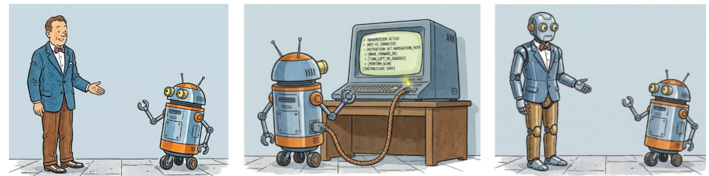

The rapid evolution of modern AI systems — large language models, automated reasoning engines, and AI-assisted proof checkers — is fundamentally reshaping how researchers approach problems in Economics and Computation. This tutorial provides an accessible, hands-on introduction to AI-driven research methodology tailored to the EconCS community.
We survey the landscape of AI tools now available to researchers: from automated literature review and idea generation, to assisted mathematical problem-solving, conjecture formulation, and proof search. We illustrate how practitioners can integrate these tools into their daily workflow — as collaborative partners rather than mere search engines.
Related tutorial slides from earlier presentations:
The tutorial will be followed by a workshop in the afternoon (also on July 6 at EC'26 in Rome), bringing together researchers to discuss open problems, share early-stage work, and explore the frontiers of AI-assisted research in Economics and Computation.